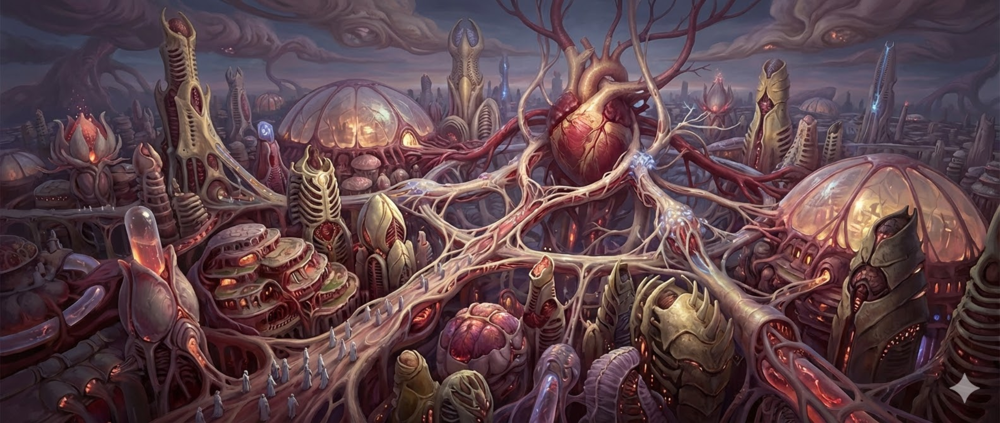
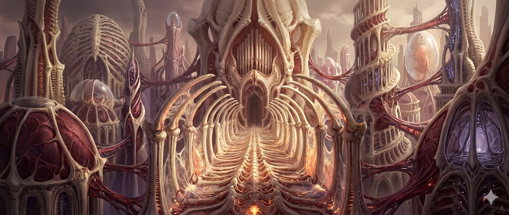

灵肉圣所
阵营总览
总览灵肉圣所是一整条以血肉、基因、器官、进化与自我改造让生命本身成为力量、武器与圣性的文明道路。
灵肉圣所相信宇宙中最伟大的器物是生命本身。血肉是可被升格的圣器，器官是可重塑的功能模块，基因是等待开启的圣典，进化是可主动追求的道路。
他们不崇拜诸神。圣性不在外部赐予，而在生命内部孕育。
起源与命名
总览"灵肉"意味着他们追求灵与肉的共同升格。唯有灵与肉彼此嵌合、彼此重塑，才会诞生圣性。
"圣所"则说明他们的文明并不以帝国、联邦或学院的方式自居。他们更像一处朝圣体系，一片由教义、仪式、改造与共同信念维系起来的神圣领域。
原胚圣堂
主城原胚圣堂是灵肉圣所的主城，整个生物阵营最核心的活体圣城——由血肉、骨骼、神经与活体组织构成的巨大教堂。
"原胚"意味着一切更高生命的起点，也是尚未完成、却孕育无限可能的初始形态。整座城市会呼吸、会脉动、会生长、会愈合。这里没有石雕与机械梁柱，只有骨质穹顶、脊柱长廊、神经束彩窗、脉动膜翼与温热的活体地面。
视觉上，原胚圣堂呈现为：一座巨大而活着的血肉教堂矗立在黑暗地表之上，穹顶像肋骨般向天空张开，墙体缓慢起伏仿佛整座建筑在呼吸。教堂内部垂落着发光神经束如彩窗与圣灯，地面有温热而缓慢搏动的血色脉络，祭坛后方不是雕像而是半沉睡的巨型圣躯结构，空气里回荡着低沉圣歌、心跳与器官共鸣。

城市结构
原胚圣堂一、原初之心
原胚圣堂最核心的区域——巨大的心脏圣殿，半沉睡的原始圣骸核心。整座圣城的脉动、营养、再生与扩张皆由此驱动，既是能源中枢，也是精神意义上的"圣心"。
二、朝圣中殿
信徒、改造者、战士与朝圣者最常抵达的区域。承担祷告与宣讲、新生者入教仪式、赐骨与祝血等基础仪式、教义传授和阵营公开集会。高耸的骨柱、低沉的圣歌、脉动的长廊与发光神经束构成了鲜明的宗教氛围。
三、孵化与改造区
灵肉圣所最有辨识度的功能区域，包括基因圣库、器官培育池、骨甲孵化室、组织缝合厅、蜕变修道院与突变试炼室。力量在这里被生长、植入、吸收与蜕变。
四、圣歌回廊
遍布整座圣城的神经长廊与共鸣通道。这些回廊会传导低沉而持续的脉搏音与圣歌，让整座原胚圣堂始终笼罩在似祷告、似呼吸、似意识低语的氛围中。信徒认为，这不是单纯的声音，而是圣堂本身在回应他们。
五、狩猎外庭
主城外围设有猎手集结区、精华回收池、异变兽栏、活体兵器孵化场、决斗试炼场和战后样本处理所。这部分决定了灵肉圣所不仅神秘，也危险且富有进攻性。
力量体系
体系灵肉圣所的力量来自生命自身的重塑与升格。表现形式包括：肉身强化、骨甲生长、器官异化、组织再生、基因改造、形态变化、精华吸收、血肉武装、感官强化、临时突变与对敌适应性进化。最完美的武器长在身体里。
战斗风格
灵肉圣所是最具侵略性、最有掠食者体验的路线。擅长高机动近战、再生续航、单体压制、形态切换、狂暴强化、血肉武装展开、吸血掠夺与适应性进化。核心优势在于越战越强、越猎越像更高阶生命。

升级路线与资源
体系成长循环：进入夹层或战场 → 猎杀畸变怪物与异变首领 → 提取生命精华、基因样本、异变器官 → 存入基因库 → 解锁改造分支与血肉技能 → 身体重塑与能力植入 → 前往更危险区域猎取更高阶样本。最核心的成长资源是可被吸收与继承的生命信息。
核心资源
生命精华——从强大生物、畸变怪物或特殊目标体内提取的活性能量，用于强化基础属性、激活蜕变与维持活体系统。
基因样本——包括完整基因、异变片段、祖源序列、适应性模板等，是解锁新技能树与新形态的核心资源。
异变器官与组织材料——包括复眼、毒腺、骨核、触须束、再生腔体、装甲外皮等，可用于器官移植、活体武装、骨甲构筑与高阶改造。
组织结构
体系圣所共祭庭——最高层，负责教义解释、圣堂运作、改造准则与重大远征许可。
第一蜕者——圣所最高领袖。
教义部门——负责信条宣讲、仪式设计、朝圣秩序与新人接纳。
基因圣库部门——负责样本存储、祖源分类、改造权限与高阶血统研究。
改造部门——负责器官植入、骨甲培育、蜕变手术与战后修复。
狩猎部门——负责夹层远征、精华回收、猎团组织与高危目标清剿。
圣歌与礼仪部门——负责圣堂共鸣网络、祷告体系与精神维系。
阵营气质
气质与立场灵肉圣所是将生命崇拜、血肉科技、改造仪式与自我神化融合到极致的活体宗教文明。通常显得安静、虔诚、冷漠，近乎温柔地残酷，对蜕变抱有绝对信念。不仇恨神明，只是认为生命本身有资格向更高处生长。
对外立场
气质与立场对灰烬秘塔（魔法侧）
"你们执着于理解世界，却始终与世界保持距离；你们只敢阅读深渊的文字，却不敢让深渊在体内开花。"在他们看来，魔法太偏向外部呼唤与远程操控，缺乏真正的"自我蜕变"。
对至构联邦（科技侧）
"你们把力量铸在钢铁之中，却不敢把力量种进自身；你们制造无数武器，却从未真正让自己成为武器。"在他们看来，机械再强，也终究是外物。只有生命本身，才能跟着战斗、痛苦与猎杀不断进化。
夹层观
气质与立场对灵肉圣所而言，夹层是生命异变的猎场、圣性胚胎的孵化场与更高进化的试炼地。他们在夹层中看到更强大的猎物、更古老的生命样本、更珍贵的异化器官与推动自身升格的圣性残片。